Enterprise mobile / UX Design Intern / 2026
Wuhan Marine Machinery
Mobile Platform UX Redesign
Research · Information architecture · UI · PrototypeDuring my summer 2026 UX design internship, I reviewed an enterprise mobile platform used for production, safety and internal services. I handled product research, information architecture, UI design and AI-assisted frontend prototyping within existing business workflows.
Clearer access to
everyday work.
Product research, UX/UI and AI-assisted frontend prototyping.
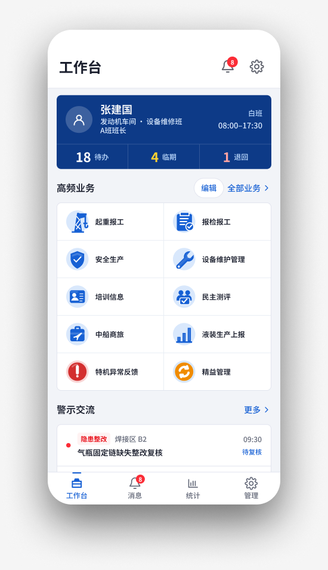
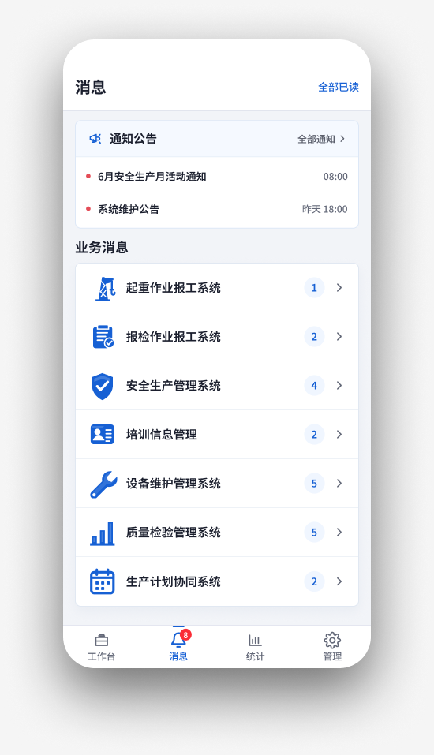
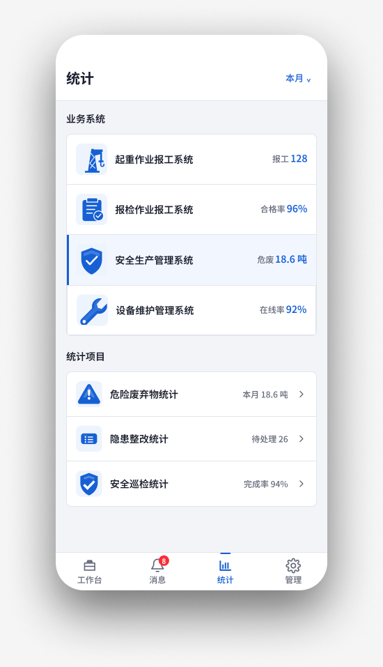
Product audit
Screenshots, page records and heuristic analysis established the design baseline.


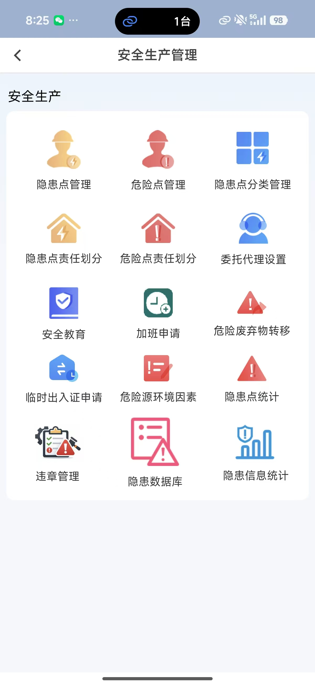
Explore three heuristic findings and their design responses. These observations come from product analysis, not employee testing.
01 / Entry priority
Operational and configuration entries share similar weight.
Broad business entry points have similar visual weight in the original Workbench.
Separate task context, frequent services and supporting information.
Keep identity and task status above compact service rows; place warnings in their own area.

02 / Business context
Related work appears in both services and messages.
The audit records overlapping business access without a clear division of purpose.
Keep both entry paths, with a clear purpose and consistent business labels.
Use Workbench for business access and Messages for system-attributed inboxes, followed by task detail.

03 / Form patterns
Form requirements vary across business modules.
Original form records have different fields and conditional requirements.
Reuse field patterns while retaining required and conditional information.
Preserve business-specific fields and show required-input feedback beside the affected field. This frame illustrates the feedback pattern, not field-by-field completeness.
Source: August 7 field comparison; August 11 prototype review. Modules without full original forms were not expanded by inference.

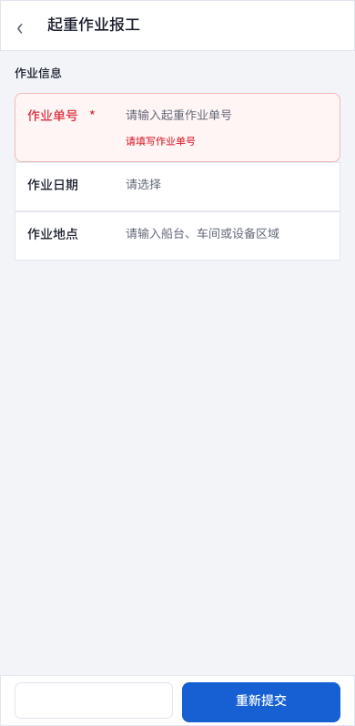
From broad entry points to a layered Workbench
Compare information hierarchy across different capture bounds and design states. The uncropped images do not show equivalent task data or measured results.
August 10 inventory: 121 reference image files; 37 page entries, including grouped detail routes; 18 form configurations containing 199 field definitions. Each count uses a different unit. These describe project scope, not unique screens, research participants or measured outcomes.
Information architecture
Retain the four primary destinations and clarify what each one contains.
Enterprise mobile platform
Workbench工作台
Business entry
- Identity + task summary
- Frequent business
- Full service catalog
Messages消息
Follow the work
- Announcements
- Business-system inbox
- Task → detail
Statistics统计
Understand the data
- Choose a system
- Period + metrics
- Detail + breakdown
Management管理
Manage context
- Personal information
- Notifications
- Account + help
Workbench
Find a service, then enter its business form
- L1Workbench
L2 All Business
Search + category filters
- L3Safety Production
- L3Processing record
Example catalog routes, not the complete inventory. Frequent services can also open business forms directly.

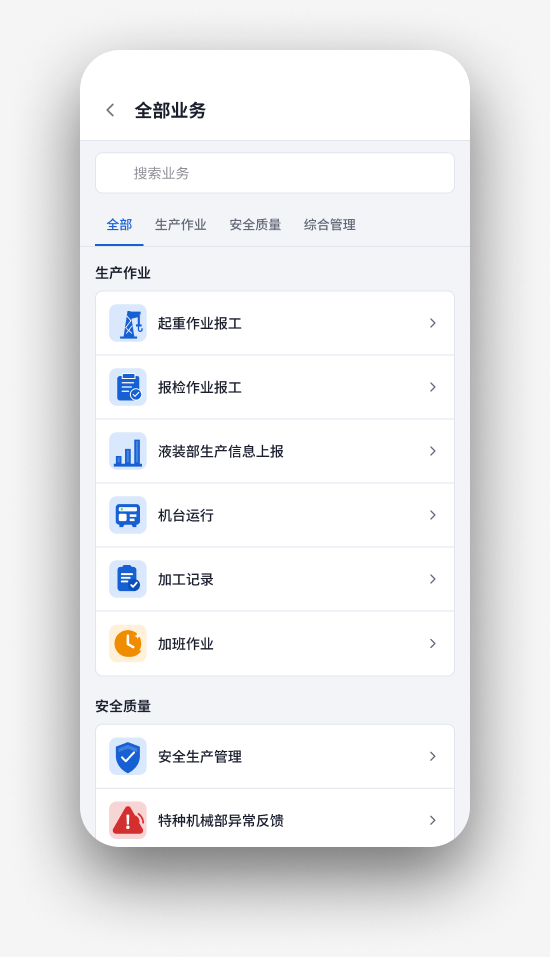
Messages
Keep the business context visible
- L1Messages
L2 Business-system inbox
Pending / due / returned / sent are list states.
- L3Task detail
L2 Announcements
- L3Notice detail

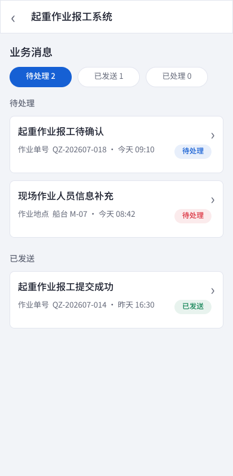
Statistics
Keep system and period attached to the metric
- L1Statistics
Choose a business system and period on this screen.
- L2Metric / analysis detail
- StateBreakdown / export entry
- L2Metric / analysis detail
System selection and breakdown are interface states, not additional page levels. No separate L3 page is asserted here.

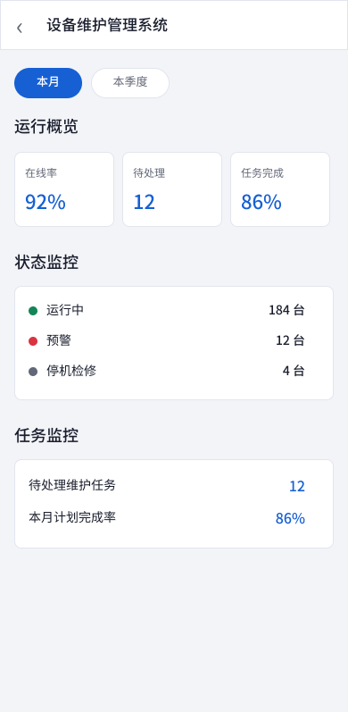
Management
Keep personal context and settings together
- L1Management
- L2Personal information
- L2Notification settings
- StateNotification toggles
- L2Account, help & about
Editing and toggles are settings states; this overview does not invent a further page level.

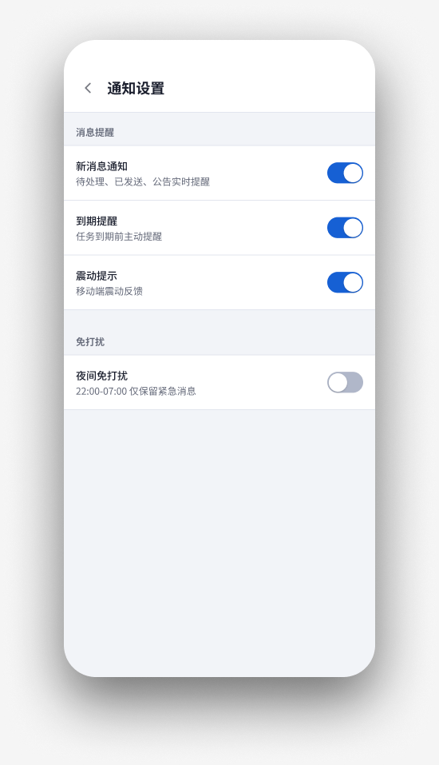
Route examples reconstructed from the 37-entry page inventory and local route handlers. L1–L3 count depth from a primary destination; states are labeled separately. Figma reference screens may precede later frontend refinements.
Keep familiar business names so service entry and message attribution refer to the same systems. Give frequent services more prominence, while keeping the full catalog and existing form requirements available.
Broad systems at equal weight
Context → action → supporting information
Prototype structure, reconstructed from the current page database and Figma Main Flow. An earlier five-tab IA exploration separated task discovery from business access; the later four-tab prototype combines them in Workbench. This is an interface reorganization, not a redesign of company approval procedures.
Workbench design iterations
Six visual explorations compare task emphasis, information density and industrial expression.
Choose a direction to inspect its hierarchy and trade-offs. The notes interpret the preserved designs; they do not report user testing or approval decisions.

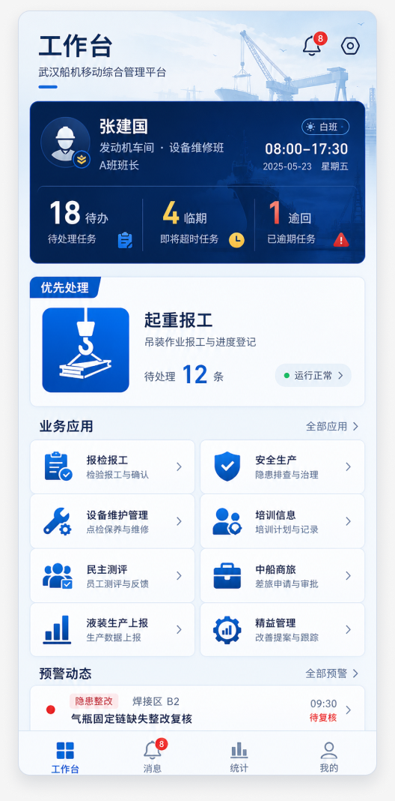
Design notes
- Design goal / focus
- Emphasize identity and the priority task.
- Strength
- A prominent identity block and priority task create a clear focal point.
- Trade-off
- The large illustrated header uses more vertical space before the service list.

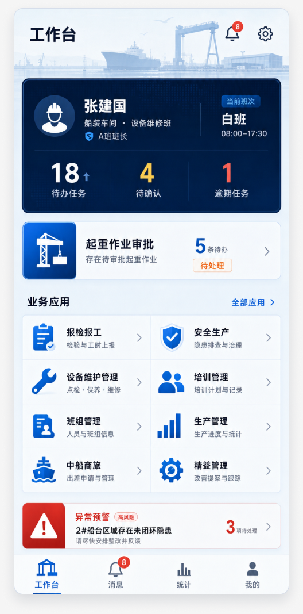
Design notes
- Design goal / focus
- Explore a lighter visual hierarchy.
- Strength
- Compact business rows sit below a distinct identity and task summary.
- Trade-off
- The dark summary remains the strongest visual element despite the lighter surrounding surface.

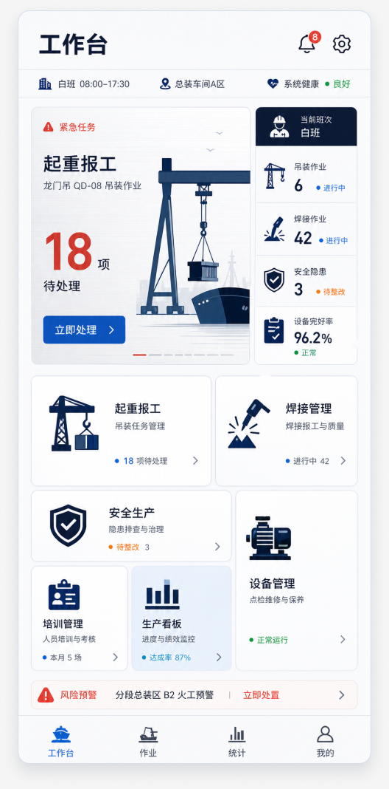
Design notes
- Design goal / focus
- Explore an asymmetric layout.
- Strength
- A large task card sits beside a narrow operational summary.
- Trade-off
- Unequal card sizes create several reading paths and require clear priorities.

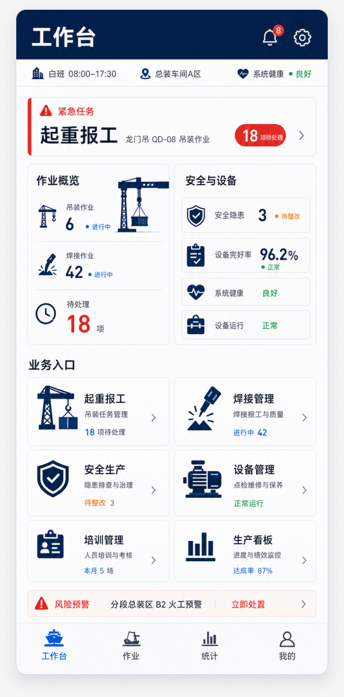
Design notes
- Design goal / focus
- Balance tasks and operational summaries.
- Strength
- Task and operational summaries are visible together, with compact business entry rows.
- Trade-off
- More metrics compete for attention; the page needs a clear priority among them.

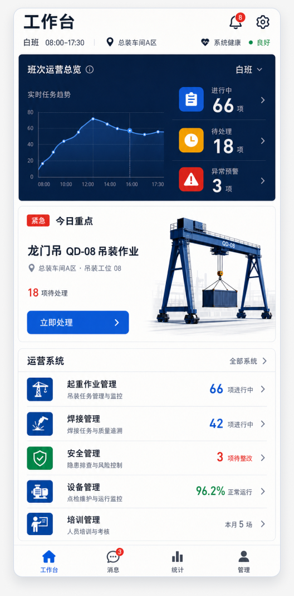
Design notes
- Design goal / focus
- Provide an overview of current work.
- Strength
- A shift overview and task trend are separated from the business-system list.
- Trade-off
- The overview and featured task place business entry further down the page.

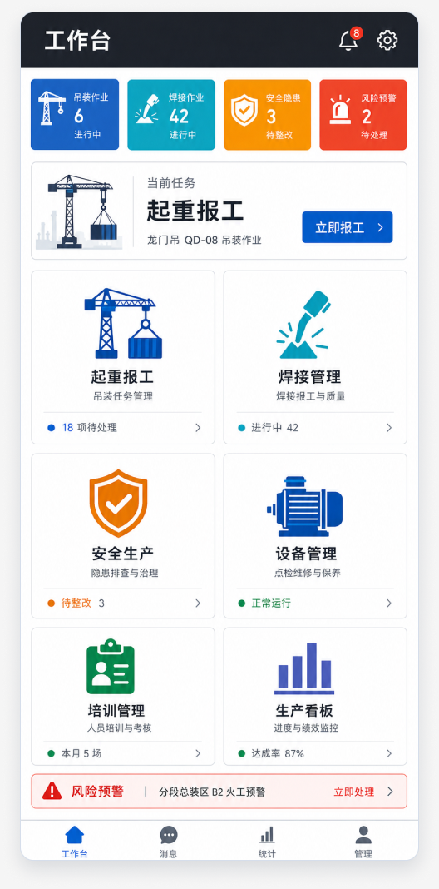
Design notes
- Design goal / focus
- Explore a system matrix.
- Strength
- Large system cards and a distinct status strip make business categories visible.
- Trade-off
- The large cards use more vertical space than compact service rows.
Compare two representative directions
Compare the visual trade-offs; no formal ranking or selection rationale is documented.
Compact business access
A documented Figma design state; employee validation and company approval are unconfirmed.
Screens and interaction flows
Explore the four primary destinations, then follow a task or inspect a form state.
Four primary Figma screens Workbench · Messages · Statistics · Management


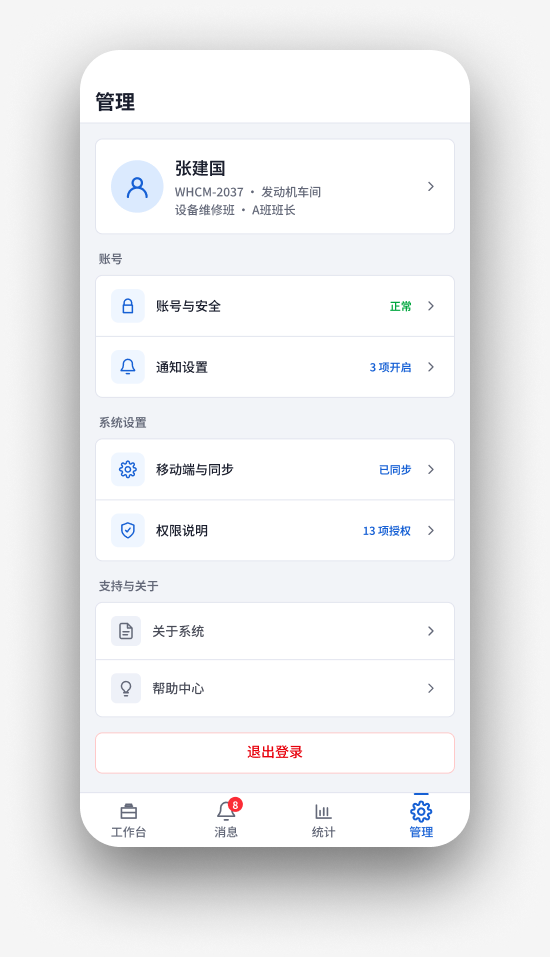
Handle a business message
Messages → system inbox → task detail
Design decision. Name the business system before showing task status, then carry that context into the detail view.
Source note
Figma links confirm this route and its return path. The local prototype review also records message-list and detail navigation.

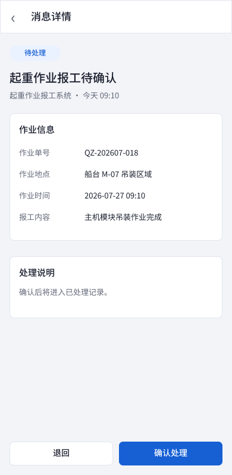
Record a safety issue or business activity
Independent safety, rectification and production forms
Design decision. Group fields by work stage and preserve required information. The examples share form patterns; they are not one sequential workflow.
Source note
Original-field comparison supports the field-alignment approach. The safety-entry form is a design proposal, not a one-to-one replacement for the old Safety hub.

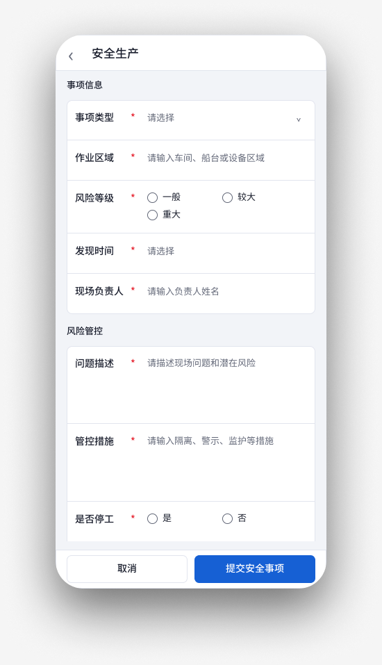

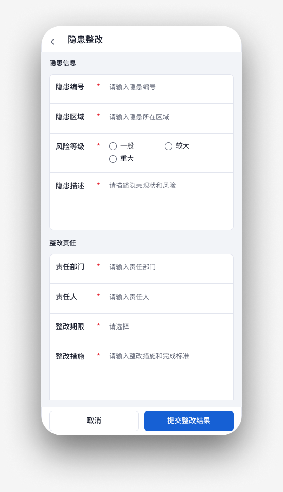

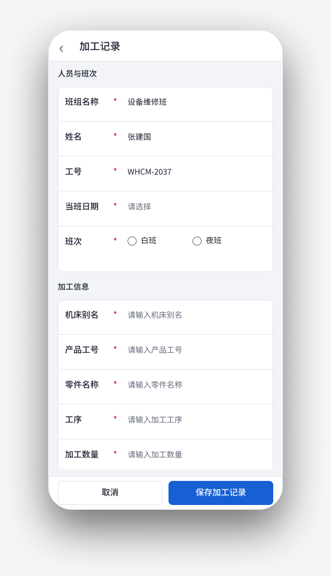
Recover from incomplete input or leave a form
Validation feedback / discard confirmation / notification settings
Design decision. Keep the error next to its field and ask before discarding input. Notification toggles are a separate settings example.
Source note
The August 11 prototype review documents required-field checks and discard confirmation. These Figma frames illustrate states; they do not establish employee validation.

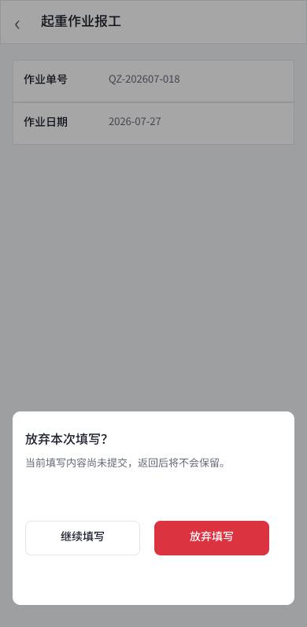
Inspect a metric within its business context
Statistics → system or metric detail → breakdown/export entry
Design decision. Choose the business system and period before inspecting detail; retain that context across the route.
Source note
The example route opens Equipment Maintenance from the system list; the overview snapshot starts on Safety. Figma links confirm detail/export-entry navigation. The August 11 period-label inconsistency remains a next step.
Design system
Figma component assets and later frontend tokens are shown as separate stages of the design work.
Business semantic colors
Figma assets · August r6 offline export Buttons, fields, status badges and toggles below are preserved design specimens.


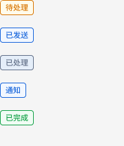

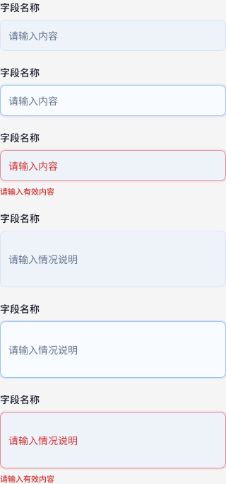

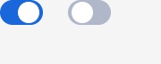
View original Figma foundations & component directory

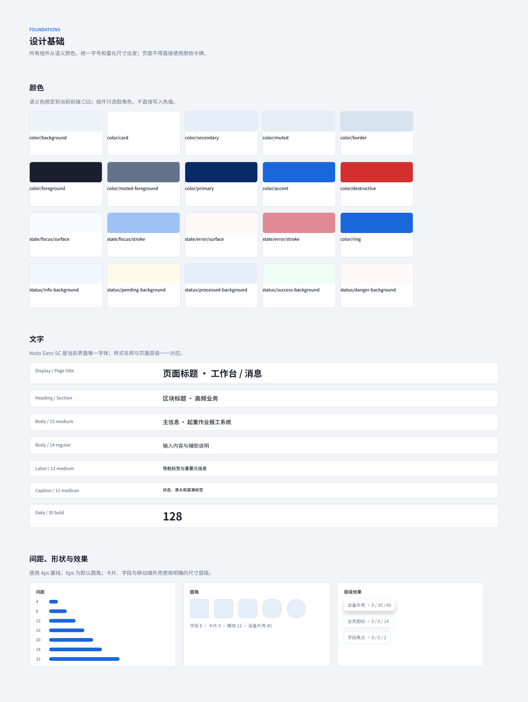

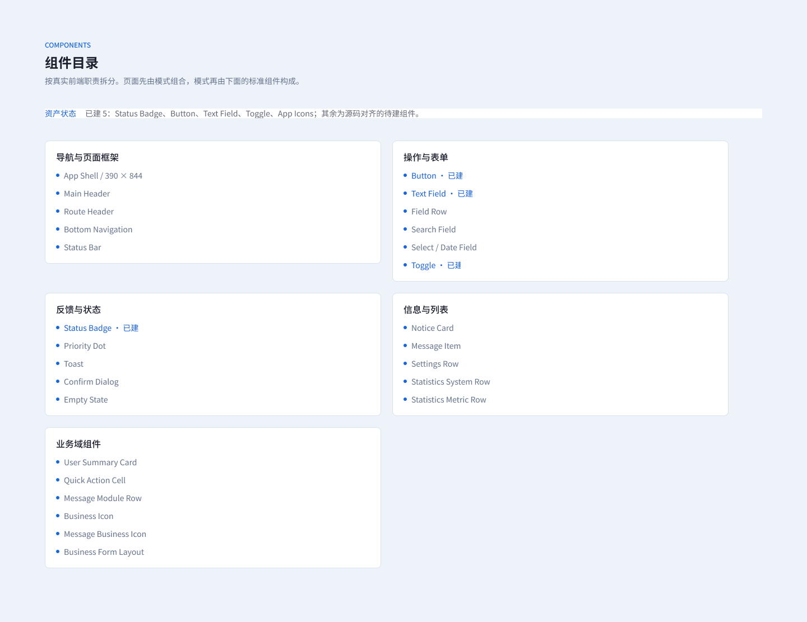
Outcome and reflection
Submitted to the company; production release and impact remain unconfirmed.
Design assets, IA, prototype and handoff
Editable Figma assets, information architecture, page/field inventory, a mock-data frontend and supporting handoff records.
- Unify statistics-period labelsCarry the selected period into each detail.
- Connect real servicesAuthentication, permissions and data.
- Validate in the workplaceReal roles, tasks and devices.
From source material to a handoff
Follow the project artifacts through overlapping Figma and frontend work, the August 10 handoff and the August 11 local review. This is not an approval timeline.
01 / Audit
What needed organizing?
How do the existing entry points, pages and fields fit together?
Inventory source screenshots and page records before refining the interface.
Heuristic findings and a page / form / field baseline.
02 / IA exploration
Where should tasks and services live?
Should task discovery and business access be separate destinations?
An archived proposal used five destinations. The later prototype keeps four, combining context and service access in Workbench.
An explored page tree, followed by the documented four-destination structure.
Editorial reconstruction of the archived page tree and current inventory. The reason for abandoning five destinations is not recorded as an approval decision.
03 / Visual studies
How much information belongs in the first view?
How can task emphasis, service density and industrial expression coexist?
Six Workbench studies vary their balance. Their trade-offs remain available for comparison.
Preserved visual directions; no formal ranking or company approval is inferred.
04 / Editable Figma
How could design and prototype stay aligned?
How can reusable design assets reflect the working interface?
Build editable screens, components and connections; local QA records also describe reconstructing Figma pages from frontend renders.
Editable Figma assets and a connected prototype. This was iterative work, not a one-way design sign-off.
05 / Aug 10 handoff
What could the company continue from?
What needs to travel with the design and mock-data prototype?
Package design exports, page and field records, frontend source, API contracts and QA evidence together.
Frozen r6 handoff, August 10, 2026. Submitted to the company; production release and impact remain unconfirmed.
Editorial summary of the frozen delivery contents, not a screenshot of company acceptance.
06 / Aug 11 review
What still needed work after handoff?
Does context remain consistent across the local prototype?
The August 11 walkthrough recorded a statistics-period mismatch between summary and detail.
A documented next step: carry one period value across views. Real authentication, permissions and services remain future integration work.
AI-assisted frontend development was part of my contribution. This is a local mock-data prototype review, not employee usability testing.

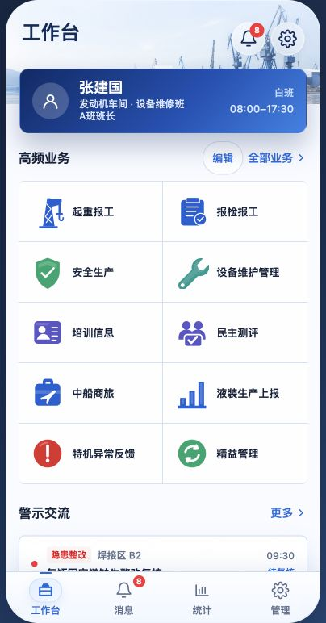
Working with a complex enterprise product taught me to establish business structure before refining the interface. Existing labels, fields and approval requirements constrained what I could simplify. AI-assisted prototyping helped me explore and assemble the work; source comparison was still necessary to check its accuracy.
Evidence, contribution & project boundaries
I worked on product analysis, IA, UX/UI and prototype development with AI-assisted execution. This page uses original product screenshots, actual Figma exports and project documentation. New diagrams are editorial reconstructions of those sources.
Sources: current page database and raw-data coverage; archived UX analysis and navigation/wireframe strategies; August 7 form comparison; August 10 r6 handoff; August 11 interaction QA and retrospective. The August 11 period-label inconsistency remains a documented next step.
The work was submitted to the company. Employee usability testing, launch, adoption and measured outcomes are unconfirmed. Figma explorations are not validated selections; some design views differ from later frontend refinements. The safety-entry form is not a one-to-one replacement for the original Safety hub.
View Figma source ↗